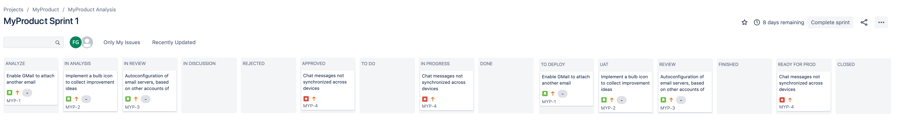
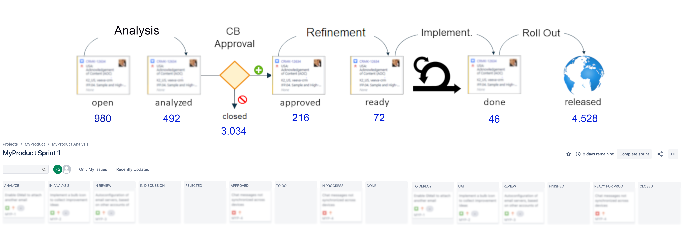
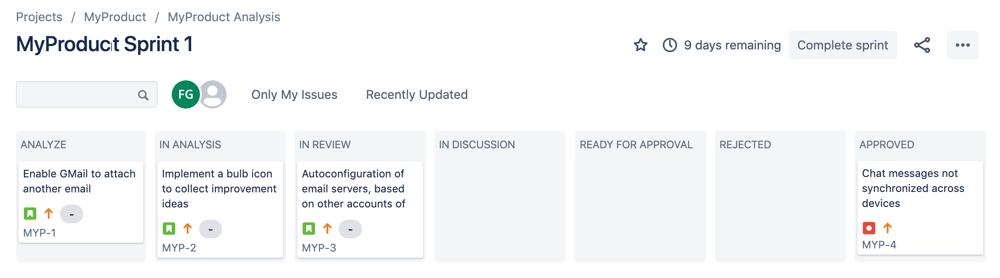

What if ... instead of this:

You could have this:

In short: JOD allows you to easily build real-time dashboards that summarize the information of multiple and large boards.
You are right, the numbers are extracted on real-time from Jira and they are an hyperlink to the tickets.
A Case Study
Suppose that you are working on a product.
The product receives improvement ideas and these ideas are analyzed for a possible implementation.
Your Jira board may look something like this (note: this case is based on a real-world example):

Yes, all these columns are just for the "Analysis" and "Approval" parts of the process.
And this is not a especially complex one. Analysis could be separated into "Process" and "Technical" Analysis, for example.
Approved items go then through a refinement and also a development cycle, so the whole workflow may end up having about 20 columns.
This is of course too much. Multiple teams can work in parallel and even also in different parts of the workflow (not ideal, but a reality in many cases).
Compare the 20 columns Jira board with the summary presented here:
A high-level overview helps to have an end-to-end overview, increasing alignment and bringing more clarity on where to focus.
You got it? Then you are now ready to
MAKE ONE.